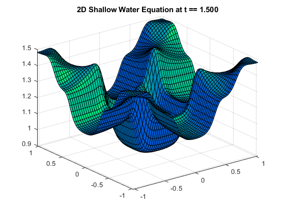
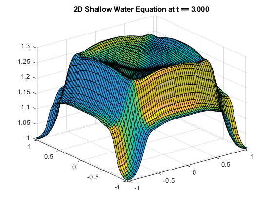

3D Shallow Water Equation Animation
Introduction
This is the summary of the last coding assignment for the course AMATH442/642 (Computational Methods for Partial Deffierential Equations) which I took in my second-last academic term (Fall 2020) at Waterloo.
In this assignment, I needed to establish a computational method to simulate how shallow water moves within a given time period.
Shallow Water Equations
The shallow water equations in 3D space are modelled using the following Partial Differential Equations (PDEs):
$$ \frac{\partial }{\partial t}\left\lbrack \begin{array}{c} h\\ \mathrm{hu}\\ \mathrm{hv} \end{array}\right\rbrack +\frac{\partial }{\partial x}\left\lbrack \begin{array}{c} \mathrm{hu}\\ {\mathrm{hu}}^2 +\frac{{\mathrm{gh}}^2 }{2}\\ \mathrm{huv} \end{array}\right\rbrack +\frac{\partial }{\partial y}\left\lbrack \begin{array}{c} \mathrm{hv}\\ \mathrm{huv}\\ {\mathrm{hv}}^2 +\frac{{\mathrm{gh}}^2 }{2} \end{array}\right\rbrack =0\;\;\;\ldotp \ldotp \ldotp \left(1\right) $$where \(h\) is the height of the water, \(u\) and \(v\) are the 2D velocity vectors, and \(g=9.81\) is the gravitational acceleration.
Initial Boundary Values Problem
Consider the following initial boundary values for the above PDE (1):
- PDE (1) on \(\Omega\)
- \(\Omega :\left(x,y\right)\in {\left\lbrack -1,1\right\rbrack }^2\) and \(t\in \left\lbrack 0,3\right\rbrack\)
- \(U\left(x,y,0\right)={\left\lbrack \begin{array}{ccc} 2 & 0 & 0 \end{array}\right\rbrack }^T\) for \(\left(x,y\right)\in {\left\lbrack -\frac{1}{2},\frac{1}{2}\right\rbrack }^{2\;}\), and
- \(U\left(x,y,0\right)={\left\lbrack \begin{array}{ccc} 1 & 0 & 0 \end{array}\right\rbrack }^T\) otherwise.
How to Simulate the Results?
To generate numerical simulations at different times, we can use the Finite Volume Method with Lax-Friedrichs Flux:
$$ U_j^{n+1} =U_{j\;}^n -\frac{\Delta t}{|\Omega_j |}\int_{\Omega } \Delta \cdot F\left(u\right)\mathrm{ds} $$The time-step size is chosen dynamically based on the following equation:
$$ \Delta t=\frac{c}{2}\mathrm{min}\left(\underset{j}{\mathrm{min}} \left(\frac{\Delta x}{\lambda_{x,j} }\right),\underset{j}{\mathrm{min}} \left(\frac{\Delta y}{\lambda_{y,j} }\right)\right) $$where
$$ \lambda_{x,j} =\left|u_j \right|+\sqrt{{\mathrm{gh}}_j } $$ $$ \lambda_{y,j} =\left|v_j \right|+\sqrt{{\mathrm{gh}}_j } $$To approximate the solution for the above problem, we will apply the divergence theorem
$$\int_{\Omega } \Delta \cdot F\left(u\right)\mathrm{ds}=\int_{\partial \Omega } F\left(u\right)\cdot \overrightarrow{n} \mathrm{dt}$$where \(\Omega\) is the square surface given by the following vertices
- \(\left(x\left\lbrack i-1\right\rbrack ,y\left\lbrack i-1\right\rbrack \right)\)
- \(\left(x\left\lbrack i\right\rbrack ,y\left\lbrack i-1\right\rbrack \right)\)
- \(\left(x\left\lbrack i-1\right\rbrack ,y\left\lbrack i\right\rbrack \right)\)
- \(\left(x\left\lbrack i\right\rbrack ,y\left\lbrack i\right\rbrack \right)\)
Other constants
Here are some constants for solving this problem:
- CFL coefficient: \(0.8\)
- \(x \in [-1, 1]\)
- \(y \in [-1, 1]\)
- number of physical cells: 61
MATLAB Codes
You can find my codes for this project here.
Note: Codes will be private between September and December every year.
Results
The following plots show how the shallow water looks like at \(t=0\), \(t=1.5\), and \(t=3\):



The following video is the animation for this problem: